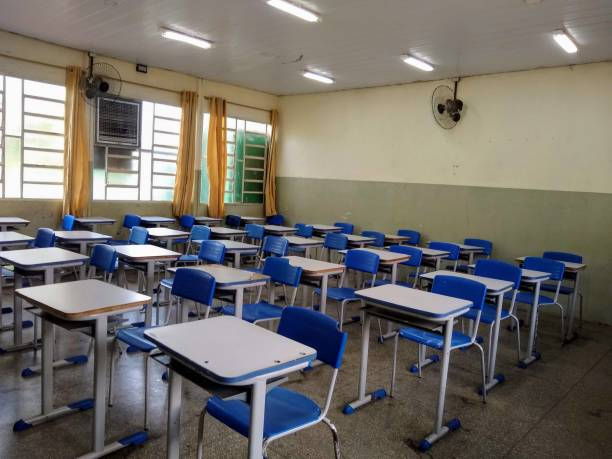

Como entrar no curso?
Caso você esteja no 9°ano, no final do ano, podem lhe solicitar para fazer a entrevista para o curso, mas se não forem, fale com a direção do colégio, e caso você fique entre os 40 primeiros, você está no curso técnico.
Consigo ser transferido de outra escola para o curso técnico?
Caso você seja do curso técnico de análise e desenvolvimento de sistemas nessa outra escola, basta pedir a transferência e você estará no curso técnico no IVB.
Consigo entrar no curso estando já no Ensino Médio sem ser do técnico?
Não é possível, mas você pode buscar outros métodos de estudo fora da escola.